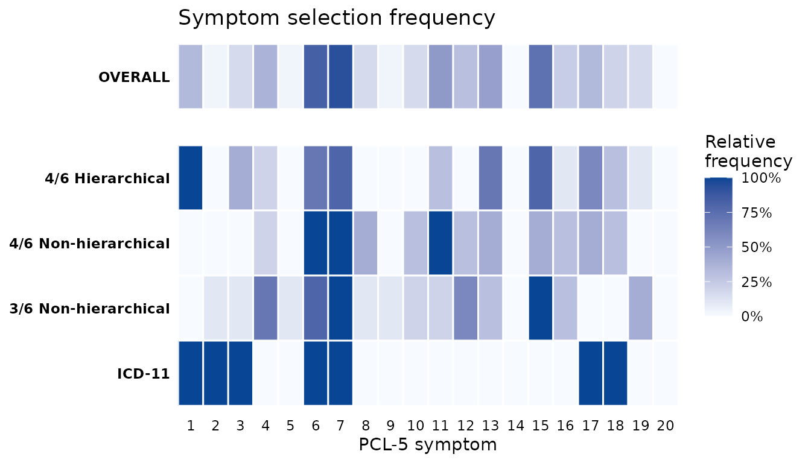

This vignette evaluates a set of candidate definitions for PTSD on a single sample, reports their diagnostic performance, and identifies the symptoms that recur across the most accurate solutions.
Why compare different definitions
As the differences between the DSM-5-TR and the ICD-11 illustrate,
there are numerous ways PTSD could be defined. With regard to the
DSM-5-TR definition, there are two relevant parameters that can be
changed: the number of items that must be present and whether the
clusters structure should be retained.
compare_optimizations() runs a set of different rules in
one call so they can be compared easily. Although fully customizable
(see below) the default set contains three example rules, as well as the
option to add the ICD-11 criteria. These rules are:
- Four of six symptoms, hierarchical. At least four of a total of six selected symptoms must be present, and the selected set must include at least one symptom from each DSM-5-TR cluster (B, C, D, E). This preserves the polythetic structure of the full criteria.
- Four of six symptoms, without the cluster requirement. The same number of symptoms, but any six symptoms may be chosen, not requiring the cluster structure.
- Three of six symptoms, without the cluster requirement. A lower threshold on six symptoms, more resembling the ICD-11 definition of PTSD.
- ICD-11. A fixed rule using seven items (re-experiencing items 1, 2, 3; avoidance items 6, 7; sense of current threat items 17, 18).
Requirements for the input data
The input must be the 20 PCL-5 items in their standard order, scored
0 to 4, with no missing values, plus any identifier columns you name in
id_col. For more details see the Getting started vignette. As there, we
keep patient_id, age, and sex
attached with id_col so that per-participant results remain
linked to demographics.
Running the comparison in one call
compare_optimizations() evaluates the three scenarios
outlined above and returns one object that holds the per-scenario
results. We request the three default optimized rules, add ICD-11 with
include_icd11 = TRUE, and keep the ten best combinations
per optimized rule with n_top = 10. The default
score_by = "balanced_accuracy" ranks combinations by the
mean of sensitivity and specificity, so the high prevalence of the
clinical sample cannot dominate the ranking; the Getting started vignette discusses this
choice and the "accuracy" and "sensitivity"
alternatives. To keep the vignette fast we use a 250-row subset of the
bundled data.
library(PTSDdiag)
data("simulated_ptsd")
ptsd <- rename_ptsd_columns(simulated_ptsd[1:250, ],
id_col = c("patient_id", "age", "sex"))
comp <- compare_optimizations(
ptsd,
n_top = 10,
include_icd11 = TRUE,
score_by = "balanced_accuracy",
show_progress = FALSE
)
print(comp)The printed object lists each scenario with its best combination, so the best performing combinations for each of the four scenarios are now directly comparable.
A performance table for the manuscript
summarize_top_combinations() collapses the object into
one table with a single row per candidate definition. Setting
as_percent = TRUE reports the rates as percentages, and
top_n limits how many combinations per rule are shown.
Each row carries the approach label, the rank within that approach,
the symptom combination, the four cell counts against the full diagnosis
(TP, FN, FP, TN), and the derived rates: sensitivity, specificity, PPV,
NPV, accuracy, and balanced accuracy. Balanced accuracy is the mean of
sensitivity and specificity, the quantity that the default
score_by = "balanced_accuracy" optimized for, so it is the
natural headline number when these definitions are compared; plain
accuracy, (TP + TN) divided by the sample size, is reported alongside
it.
tbl <- summarize_top_combinations(comp, top_n = 10, as_percent = TRUE)
head(tbl, 12)
#> Approach Rank Combination TP FN FP TN Sensitivity
#> 1 4/6 Hierarchical 1 symptom_1_6_7_13_15_17 213 19 0 18 91.81034
#> 2 4/6 Hierarchical 2 symptom_1_3_7_13_15_17 213 19 0 18 91.81034
#> 3 4/6 Hierarchical 3 symptom_1_3_6_13_16_19 213 19 0 18 91.81034
#> 4 4/6 Hierarchical 4 symptom_1_4_6_7_11_17 213 19 0 18 91.81034
#> 5 4/6 Hierarchical 5 symptom_1_6_7_11_15_17 212 20 0 18 91.37931
#> 6 4/6 Hierarchical 6 symptom_1_6_7_11_15_18 212 20 0 18 91.37931
#> 7 4/6 Hierarchical 7 symptom_1_3_6_13_15_17 212 20 0 18 91.37931
#> 8 4/6 Hierarchical 8 symptom_1_6_7_13_15_18 212 20 0 18 91.37931
#> 9 4/6 Hierarchical 9 symptom_1_3_7_13_15_18 212 20 0 18 91.37931
#> 10 4/6 Hierarchical 10 symptom_1_4_7_13_15_17 212 20 0 18 91.37931
#> 11 4/6 Non-hierarchical 1 symptom_6_7_8_11_13_17 229 3 1 17 98.70690
#> 12 4/6 Non-hierarchical 2 symptom_6_7_10_11_13_15 229 3 1 17 98.70690
#> Specificity PPV NPV Accuracy Balanced Accuracy
#> 1 100.00000 100.00000 48.64865 92.4 95.90517
#> 2 100.00000 100.00000 48.64865 92.4 95.90517
#> 3 100.00000 100.00000 48.64865 92.4 95.90517
#> 4 100.00000 100.00000 48.64865 92.4 95.90517
#> 5 100.00000 100.00000 47.36842 92.0 95.68966
#> 6 100.00000 100.00000 47.36842 92.0 95.68966
#> 7 100.00000 100.00000 47.36842 92.0 95.68966
#> 8 100.00000 100.00000 47.36842 92.0 95.68966
#> 9 100.00000 100.00000 47.36842 92.0 95.68966
#> 10 100.00000 100.00000 47.36842 92.0 95.68966
#> 11 94.44444 99.56522 85.00000 98.4 96.57567
#> 12 94.44444 99.56522 85.00000 98.4 96.57567Core symptoms across definitions
Which symptoms a rule selects can itself be of interest. If the same
symptoms are part of the best performing combination in different
scenarios, they are the symptoms carrying most of the diagnostic signal.
plot_symptom_frequency() shows, for each scenario, how
often each of the 20 symptoms appears among its top combinations, with a
pooled OVERALL row across the optimized rules (if
overall_includes_fixed = TRUE). The more frequent a symptom
is, the darker its color.
plot_symptom_frequency(comp, type = "relative")
The same information in raw counts is available through
symptom_frequency(). Reshaping it to one row per item and
one column per rule gives the table behind the figure, in which the
OVERALL column pools the three optimized rules.
freq <- symptom_frequency(comp)
counts <- xtabs(Count ~ Symptom + Approach, data = freq)
wide <- as.data.frame.matrix(counts, optional = TRUE)
wide <- cbind(Symptom = as.integer(rownames(wide)), wide)
knitr::kable(
wide,
row.names = FALSE,
caption = "Number of times each PCL-5 item is selected among the top combinations - ICD-11 not included"
)| Symptom | 4/6 Hierarchical | 4/6 Non-hierarchical | 3/6 Non-hierarchical | ICD-11 | OVERALL |
|---|---|---|---|---|---|
| 1 | 10 | 0 | 0 | 1 | 10 |
| 2 | 0 | 0 | 1 | 1 | 1 |
| 3 | 4 | 0 | 1 | 1 | 5 |
| 4 | 2 | 2 | 7 | 0 | 11 |
| 5 | 0 | 0 | 1 | 0 | 1 |
| 6 | 7 | 10 | 8 | 1 | 25 |
| 7 | 8 | 10 | 10 | 1 | 28 |
| 8 | 0 | 4 | 1 | 0 | 5 |
| 9 | 0 | 0 | 1 | 0 | 1 |
| 10 | 0 | 3 | 2 | 0 | 5 |
| 11 | 3 | 10 | 2 | 0 | 15 |
| 12 | 0 | 3 | 6 | 0 | 9 |
| 13 | 7 | 4 | 3 | 0 | 14 |
| 14 | 0 | 0 | 0 | 0 | 0 |
| 15 | 8 | 4 | 10 | 0 | 22 |
| 16 | 1 | 3 | 3 | 0 | 7 |
| 17 | 6 | 4 | 0 | 1 | 10 |
| 18 | 3 | 3 | 0 | 1 | 6 |
| 19 | 1 | 0 | 4 | 0 | 5 |
| 20 | 0 | 0 | 0 | 0 | 0 |
Customising the scenarios
The scenarios argument takes a named list. Each entry is
either an optimized rule (type = "optimize", with
n_symptoms, n_required, and
hierarchical) or a fixed criterion
(type = "fixed", with criterion = "icd11",
"caps5", or a logical diagnosis vector you supply). This is
how you vary the subset size, supply custom clusters, or benchmark
against a criterion you have already derived from another dataset (also
see Validating abbreviated symptom
definitions)
my_scenarios <- list(
"5/7 Hierarchical" = list(n_symptoms = 7, n_required = 5, hierarchical = TRUE),
"4/6 Hierarchical" = list(n_symptoms = 6, n_required = 4, hierarchical = TRUE),
"4/6 Non-hierarchical" = list(n_symptoms = 6, n_required = 4, hierarchical = FALSE),
"ICD-11" = list(type = "fixed", criterion = "icd11")
)
compare_optimizations(ptsd, scenarios = my_scenarios, n_top = 10,
score_by = "balanced_accuracy", show_progress = FALSE)See also
- Getting started for the single-definition workflow and the full input contract.
- Validating abbreviated symptom definitions for internal and cross-cohort tests of whether a definition generalizes.
- CAPS-5 workflow for using the clinician-administered CAPS-5 as the reference instrument.